Next: Robust Design Up: Types of analysis Previous: Sensitivity Contents
An optimization calculation usually consists of the minimization (or maximization) of one objective subject to one or more constraints. To that end the sensitivity of the objective is modified to take the constraint sensitivities into account leading to one combined sensitivity. This process takes place in a *FEASIBLE DIRECTION procedure. The ensuing sensitivity determines where the structure has to be thickened or thinned in order to reach a minimum of the objective function while not violating any constraint. Constraints can be taken into account by using the Gradient Projection Method or the Gradient Descent Method.
In the Gradient Projection Method the constraints are taken into account by projecting the unconstrained
sensitivities on the complement of the subspace consisting of the normals on
the active constraint hyperplanes. Suppose
the domain is n-dimensional (n design variables) and the subspace has the
dimension m (m constraints). Then the sensitivities of the constraints can
be arranged as basis vectors (the normal directions on the hyperplanes) in a
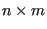
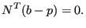 |
(838) |
Since p belongs to the subspace it can be written as a linear combination of
the basis vectors 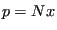 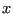 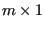
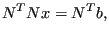 |
(839) |
from which can be solved yielding:
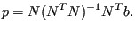 |
(840) |
The complement of the projection vector is
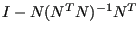 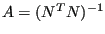 are obtained from the
unconstrained sensitivities
are obtained from the
unconstrained sensitivities  by:
by:
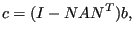 |
(841) |
or, in component notation:
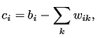 |
(842) |
where
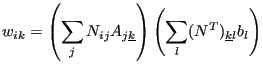 |
(843) |
(no summation over k in the last equation).
Active constraints are constraints which
To this end the algorithm starts with all constraints which are fulfilled and removes the constraints one-by-one for which the Lagrange multiplier, satisfying
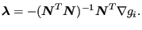 |
(844) |
points to the feasible part of the space.
The Gradient Descent Method is an interior point method which means that the starting point for an optimization has to lie in the feasible domain. The influence of the constraints on the feasible direction is always taken into account independent of the distance to the constraint bound. This methods aims to stay away from the constraint boundaries as long as possible on the way to the local optimum. The feasible direction is calculated with the following formulas (the detailed derivation can be found in [18]):
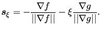 |
(845) |
Here, 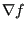 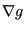 is done using the logarithmic Barrier function:
is done using the logarithmic Barrier function:
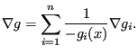 |
(846) |